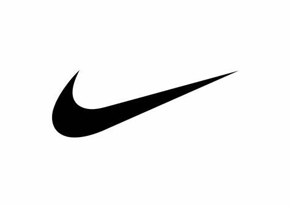
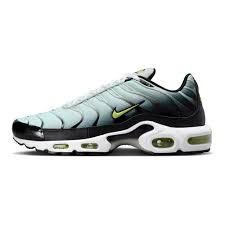

O COMECO DE TUDO
A Nike Inc. (NIKE34), que conta com os nomes Nike, Jordan e Converse em sua formação, foi criada no ano de 1964, nos Estados Unidos, e já em 1978 começou a exportar os seus produtos para países da Europa e da América do Sul, tornando-se um sucesso global em pouco tempo
CRIACAO
A expansão da Nike teve início em 1978, quando a companhia começou suas operações na América do Sul e na Europa. No mesmo ano, a empresa desenvolveu o departamento de futebol, investindo em marketing esportivo com diversos atletas. Em 1980, a Nike criou o seu primeiro laboratório de pesquisa, segmento da empresa responsável por análises e testes de ergonomia e biomecânica para o desenvolvimento de novos produtos.
Além disso, para o seu crescimento e diversificação na linha de produtos, vale destacar que a Nike também fez importantes aquisições. Cole Haan, Converse Inc, Canstar Sports Inc e Umbro são algumas das empresas adquiridas ao longo do tempo. No Brasil, a companhia chegou em 1988, com o consagrado slogan "Just do it". Mas só em 2008 foi inaugurada a sua primeira loja própria, em território nacional.
e acordo com a empresa, a missão da Nike é "trazer inspiração e inovação para cada atleta do mundo". Para isso, por meio dos seus produtos e serviços, a marca visa oferecer experiências positivas para os atletas de hoje, enquanto busca desenvolver melhorias para as próximas gerações.